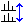

refdcon
NAME
refdcon – Reference deconvolution (1D)
.refdcon – Interactive reference deconvolution (1D)
DESCRIPTION
Reference deconvolution is a simple and effective method to remove distortions caused by field inhomogeneities or modulations in nuclear magnetic resonance spectroscopy.
USAGE
To start the reference deconvolution module call the menu item Process | Advanced | Reference Deconvolution or run the command .refdcon.
The reference deconvolution can also be used by the command refdcon on the command line. In this case all defined input parameters will be used to calculate the deconvolved spectra automatically. In a minimal usage the interval has to be defined. Additional parameters are optional. In case no parameter is set before, it is possible to set all parameters as arguments, shown in the following example:
refdcon rdf1=”-1.3” rdf2=”2” rdfwhm=”2.2”
Define and adapt the Lorentzian model
Starting the interactive reference deconvolution module it is in a first step necessary to define the region [RDF1, RDF2] including the peak of interest for the Lorentz model calculation. The interval can be defined with a left mouse click and dragging till the end of the desired region. As a consequence a Lorentzian model for the maximum peak in the interval will be calculated and shown on the screen (see the following figure):
The calculated Lorentzian model and the selected region are marked with green and pink boxes.
Parameters can be changed using the associated adjustment handles and the model will update immediately.
The left and right handle of the model (green box) changes the half maximum amplitude parameter (RDFWHM) and the handle above adapt the intensity. The handle in the center changes the peak position.
While using the adjustment handles of the selected region (rosa box) the region size changes for the following deconvolution. The Lorentz will stay the same as long as the selected peak is in the region. By default the maximum peak in the interval is the selected peak.
Another possibility to change the model parameters is by using the parameter dialog. A double click in the selected region opens the following dialog:
The menu bar
- - Start reference deconvolution of the spectra with the generated Lorentzian model
- - Recalculate the default Lorentzian model in the current region.
-  - Change to stacked layout for a better comparison of the results (Lorentzian model or deconvolved spectra)
 - Reset individual scaling
- Reset individual scaling- - Save deconvolved data
INPUT PARAMETERS
RDF1: Left interval limit for reference deconvolution [ppm]
RDF2: Right interval limit for reference deconvolution [ppm]
RDINT: Intensity for Lorentzian peak
RDPOS Position for Lorentzian peak [ppm]
RDFWHM: Full width at half maximum amplitude for Lorentzian peak [Hz]
SEE ALSO
REFDCON Manual